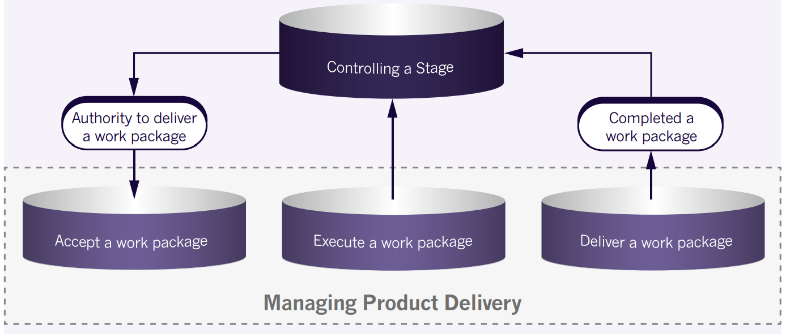
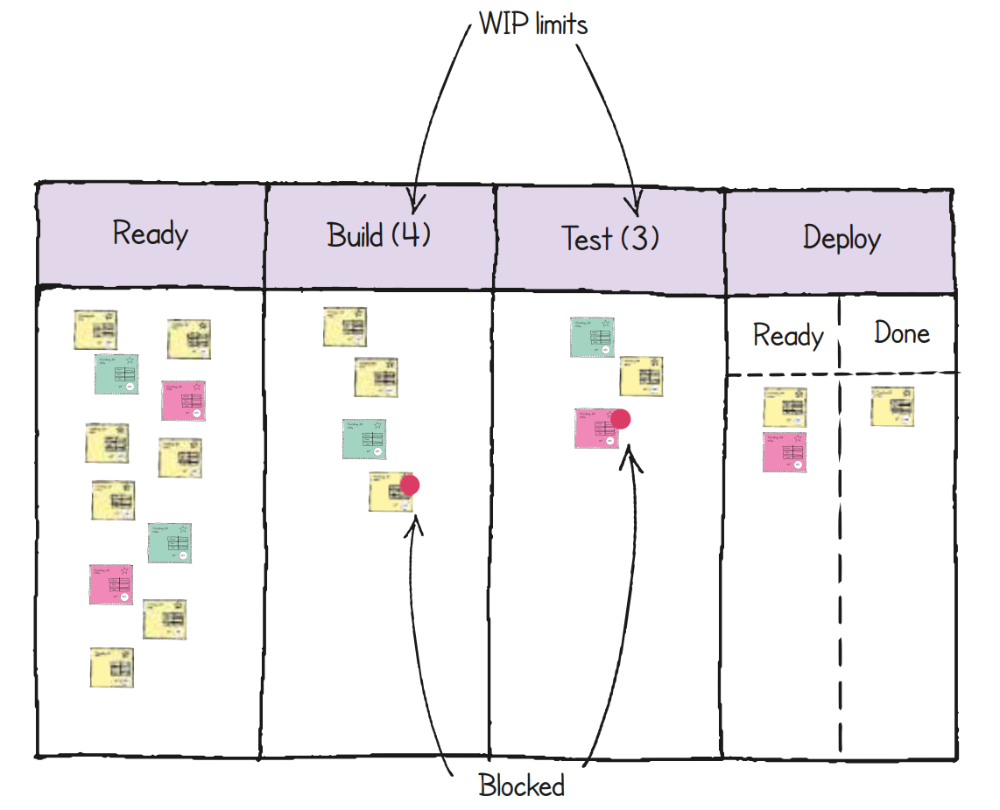
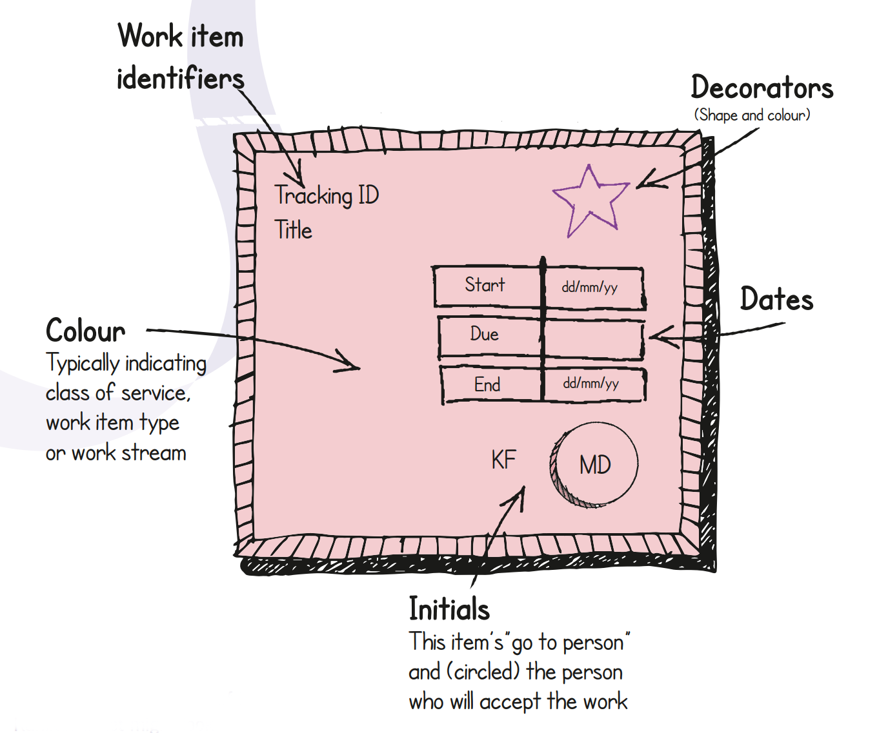
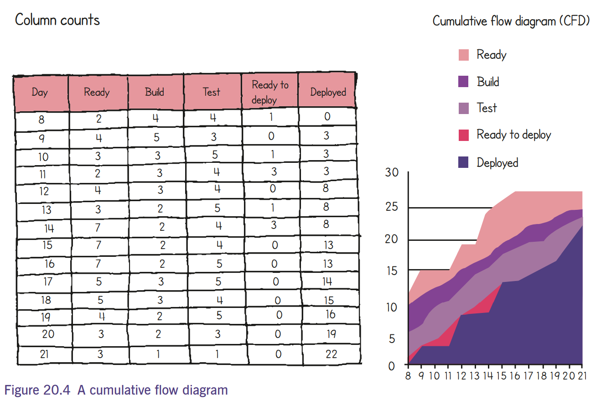
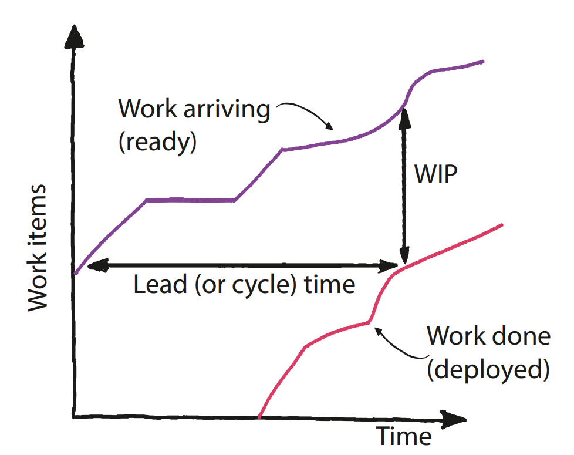
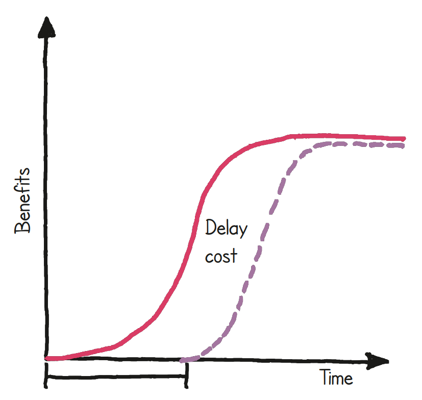
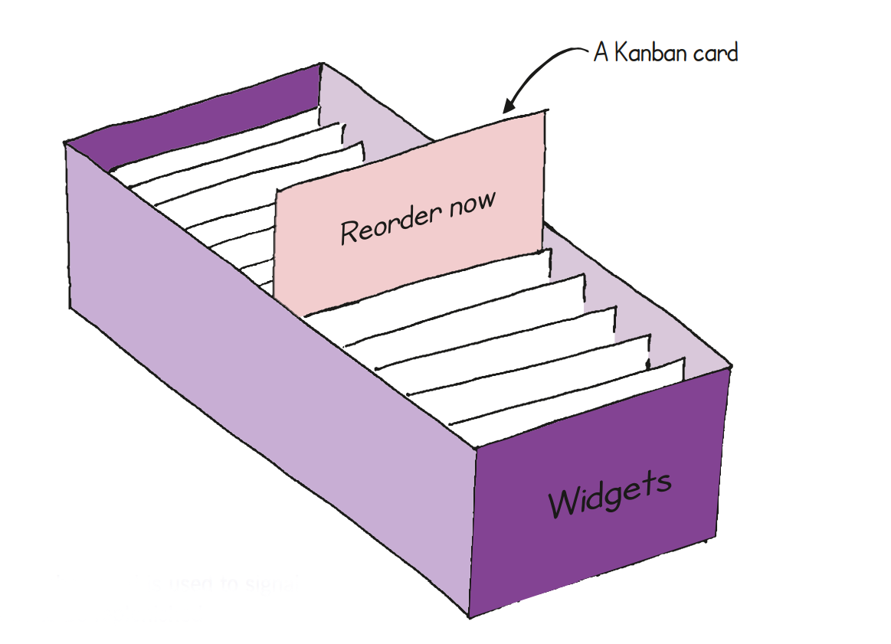
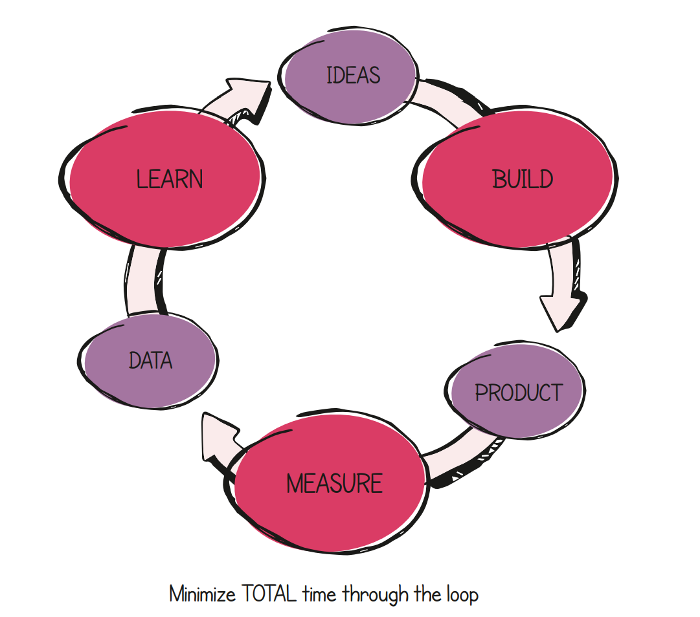

<!DOCTYPE HTML>
<html lang="en">

<head>
    <title></title>
    <meta http-equiv="Content-Type" content="text/html; charset=utf-8" />
    <link rel="stylesheet" type="text/css" href="../csharp.css" />
    <link rel="stylesheet" type="text/css" href="../master.css" />
    <link rel="stylesheet" href="https://cdn.jsdelivr.net/npm/bootstrap@4.3.1/dist/css/bootstrap.min.css"
        integrity="sha384-ggOyR0iXCbMQv3Xipma34MD+dH/1fQ784/j6cY/iJTQUOhcWr7x9JvoRxT2MZw1T" crossorigin="anonymous">


    <script src="https://code.jquery.com/jquery-3.3.1.slim.min.js"
        integrity="sha384-q8i/X+965DzO0rT7abK41JStQIAqVgRVzpbzo5smXKp4YfRvH+8abtTE1Pi6jizo"
        crossorigin="anonymous"></script>
    <script src="https://cdn.jsdelivr.net/npm/popper.js@1.14.7/dist/umd/popper.min.js"
        integrity="sha384-UO2eT0CpHqdSJQ6hJty5KVphtPhzWj9WO1clHTMGa3JDZwrnQq4sF86dIHNDz0W1"
        crossorigin="anonymous"></script>
    <script src="https://cdn.jsdelivr.net/npm/bootstrap@4.3.1/dist/js/bootstrap.min.js"
        integrity="sha384-JjSmVgyd0p3pXB1rRibZUAYoIIy6OrQ6VrjIEaFf/nJGzIxFDsf4x0xIM+B07jRM"
        crossorigin="anonymous"></script>
</head>

<body>
    <div class="container">
        <div class="panel-group">
            <div class="panel panel-primary">
                <div class="panel-heading">
                    <h1>20 Managing Product Delivery</h1>
                </div>
                <div class="panel-body">

                    <h2>20.1 PRINCE2 GUIDANCE ON MANAGING PRODUCT DELIVERY</h2>
                    <p>The purpose of the Managing Product Delivery process is to control the link between the project
                        manager and the team manager(s), by placing requirements on accepting, executing and delivering
                        project work.</p>
                    <p>The role of the team manager(s) is to coordinate an area of work that will deliver one or more of
                        the project’s products. They can be internal or external to the customer’s organization.</p>
                    <p>Managing Product Delivery views the project from the team manager’s perspective, while the
                        Controlling a Stage process views it from the project manager’s perspective.</p>
                    <p>The team manager ensures that products are created and delivered by the team to the project
                        by:</p>
                    <ul>
                        <li>Accepting and checking authorized work packages from the project manager.</li>
                        <li>Ensuring that interfaces identified in the work package are maintained.</li>
                        <li>Ensuring that a team plan is created for the work packages being assigned (this may be done
                            in parallel with the project manager creating the stage plan for the management stage).
                        </li>
                        <li>Ensuring that the products are developed in accordance with any development method(s) specified in the work package.</li>
                        <li>Demonstrating that each product meets its quality criteria through the quality method(s) specified in the product description – this may include using the PRINCE2 quality review technique.</li>
                        <li>Obtaining approval for completed products from the authorities identified in the product description.</li>
                        <li>Delivering the products to the project manager in accordance with any procedures specified in the work package.</li>
                    </ul>
                    <p>If the project uses external suppliers that are not using PRINCE2, Managing Product Delivery
                        provides a statement of the required interface between the team manager and the PRINCE2 method
                        being used in the project by the project manager. The work package may be part of a contractual
                        agreement. Therefore, the formality of a team plan could vary from simply appending a schedule
                        to the work package, to creating a fully formed plan that is presented in a similar style to a
                        stage plan.</p>
                    <figure>
                        
                        <figcaption>Fig 20-001 Overview of Managing Product Delivery</figcaption>
                    </figure>
                    <h2>20.2 AGILE WAYS OF WORKING THAT MAY ALREADY EXIST</h2>
                    <p>The agile way of working focuses very strongly on product delivery and the ‘management’ of
                        product delivery. There is an abundance of agile concepts, behaviours and techniques that have
                        been created for these, but it should be understood that these are two distinct things.</p>
                    <p>Approaches such as Scrum focus solely on Managing Product Delivery. However, with Scrum, it is
                        easy to confuse ‘Managing Product Delivery’ with just ‘product delivery’. According to the Scrum
                        Guide, Scrum does not contain any engineering or delivery practices so it could be said to
                        ‘manage’ product delivery as opposed to ‘do’ product delivery. Equally some agile approaches
                        could be said to be solely delivery practices (such as XP in the software/IT domain) as they
                        have very little that could be described as management practices.</p>
                    <p>Care needs to be taken to identify agile concepts, behaviours and techniques correctly in terms
                        of what function they perform. Are they delivery practices (sometimes referred to as development
                        or engineering practices) that create products and sub-products, or do they exist at a level
                        above this where they help to organize and control the delivery work? It is possible that they
                        could be doing both.</p>
                    <h2>20.3 PRINCE2 AGILE GUIDANCE FOR MANAGING PRODUCT DELIVERY</h2>
                    <p>When combining PRINCE2 with agile, the Managing Product Delivery process and the use of work
                        packages needs to be seen as a vital interface and linking process. It is the glue that joins
                        together project management (where PRINCE2 provides lots of guidance) with product delivery
                        (where agile provides lots of guidance). It could be said that this process is more to do with
                        ‘managing the interface’ between project management and product delivery, as opposed to
                        ‘Managing Product Delivery’. The management of one specific work package (and the product or
                        products contained within it) still needs to be carried out, but this is the responsibility of
                        the team manager at the team level inside the agile team.</p>
                    <h3>20.3.1 Work package definition</h3>
                    <p>It is the definition of the work package that is at the heart of this interface. Therefore it
                        needs to blend the complementary styles of PRINCE2 and agile. Blending this will vary according
                        to the project environment, but the main guidance when defining a work package is:</p>
                    <ul>
                        <li>It should be collaboratively defined by the project manager and the team manager (and the
                            team), perhaps with agreement that there is visibility of both the team plans and the stage
                            plans that they form part of; (this may take place as part of a sprint planning or release
                            planning meeting).
                        </li>
                        <li>The formality of reporting arrangements should be agreed (e.g. low-tech burn charts).
                            Checkpoint reports may be done verbally or as a group. Perhaps the same information could be
                            pulled from information on display, or the project manager could attend sprint demos.
                        </li>
                        <li>Tolerance with respect to scope and quality could be defined in the work package (as well as
                            in the product description(s)).
                        </li>
                        <li>The product description(s) contained in the work package may be defined at a level that
                            clearly describes what the team needs to deliver, whilst at the same time not being too
                            detailed to restrict the team and how they create those products.
                        </li>
                        <li>Guidance on the use of appropriate agile behaviours, concepts and techniques may be
                            appropriate if the delivery team would find benefit from this.
                        </li>
                        <li>Indicating the level of (internal or external) uncertainty relating to the work package
                            would provide the delivery team with an indication of the levels of risk involved so that
                            they could plan their approach to the work accordingly (e.g. this work package may be
                            classed as complex and it is suggested that a lot of prototyping may be beneficial in this
                            instance).
                        </li>
                        <li>Agreement on what the work package may release (if anything) and the preferred size of the
                            timeboxes involved – if there might be more than one.
                        </li>
                        <li>Agreement that the team plan will evolve, as it may be based on the self-allocation of work
                            and because empirical forecasting is being used.
                        </li>
                        <li>Guidance on the appropriate quality-checking techniques (e.g. using techniques the team is
                            comfortable with or identifying certain reviews that the PRINCE2 quality review technique
                            could be used for).
                        </li>
                        <li>Guidance on the impact on external stakeholders (such as operations or the training
                            department) with respect to how the frequent releases may need their involvement.
                        </li>
                    </ul>
                    <p>In some ways the work package is like a handshake, and if this partnership is built correctly it
                        brings the benefits of control in a project environment, whilst at the same time allowing the
                        delivery teams enough room to negotiate the uncertainties they will meet when working at the
                        detailed level.</p>
                    <p>This process and the use of work packages may not result in significant changes in how agile
                        teams work, but they do need to understand the role they play in a wider PRINCE2 context and
                        also that they need to provide information in the form of reports (e.g. checkpoint reports) and
                        logs (e.g. the quality register) in a timely manner to the project manager to enable the project
                        manager to carry out their duties effectively.</p>
                    <p>Table 20.1 shows PRINCE2 activities for Managing Product Delivery and how they relate to agile
                        artefacts and events (all product description references for PRINCE2 products are located in
                        Appendix A).</p>
                    <caption>Table 20.1 PRINCE2 Agile activities for Managing Product Delivery</caption>
                    <table class="table">
                        <thead>
                            <tr>
                                <th></th>
                                <th>PRINCE2 activities and products Applicable agile artefacts and events</th>
                            </tr>
                        </thead>
                        <tbody>
                        <tr>
                            <td>
                                <ul>
                                    <li>Accept a work package:</li>
                                    <ul>
                                        <li>Create team plan, A.16</li>
                                        <li>Raise risks against the team plan, A.16</li>
                                        <li>Update the quality register, A.23</li>
                                        <li>Approve a work package, A.26</li>
                                    </ul>
                                </ul>
                            </td>
                            <td>
                                <ul>
                                    <li>Artefacts:</li>
                                    <ul>
                                        <li>Release backlog</li>
                                        <li>Sprint backlog</li>
                                    </ul>
                                    <li>Event(s):</li>
                                    <ul>
                                        <li>Release planning</li>
                                        <li>Sprint planning</li>
                                    </ul>
                                </ul>
                            </td>
                        </tr>
                        <tr>
                            <td>
                                <ul>
                                    <li>Execute a work package:</li>
                                    <ul>
                                        <li>Create specialist products</li>
                                        <li>Update the quality register, A.23</li>
                                        <li>Update the configuration item records, A.5</li>
                                        <li>Update team plan</li>
                                        <li>Create checkpoint report, A.3</li>
                                        <li>Raise issues</li>
                                        <li>Raise risks</li>
                                        <li>Obtain approval records</li>
                                    </ul>
                                </ul>
                            </td>
                            <td>
                                <ul>
                                    <li>Artefacts:</li>
                                    <ul>
                                        <li>Sprint backlog (done/not done)</li>
                                        <li>Information radiators, burn charts</li>
                                        <li>Impediments</li>
                                    </ul>
                                    <li>Event(s):</li>
                                    <ul>
                                        <li>Daily stand-ups</li>
                                    </ul>
                                </ul>
                            </td>
                        </tr>
                        <tr>
                            <td>
                                <ul>
                                    <li>Deliver a work package:</li>
                                    <ul>
                                        <li>Update a work package, A.26</li>
                                        <li>Update team plan</li>
                                    </ul>
                                </ul>
                            </td>
                            <td>
                                <ul>
                                    <li>Artefacts:</li>
                                    <ul>
                                        <li>Release backlog (done/not done)</li>
                                        <li>Sprint backlog (done/not done)</li>
                                        <li>Potentially shippable increment</li>
                                    </ul>
                                    <li>Event(s):</li>
                                    <ul>
                                        <li>Sprint review</li>
                                        <li>Release review</li>
                                    </ul>
                                </ul>
                            </td>
                        </tr>
                        </tbody>
                    </table>
                    <h3>20.3.2 How to …</h3>
                    <p>There are many behaviours, concepts, frameworks and techniques that are used in agile and
                        referenced throughout this manual. Table 20.2 provides cross-references to some of the most
                        relevant for use during Managing Product Delivery.</p>
                    <caption>Table 20.2 Relevant agile guidance for Managing Product Delivery</caption>
                    <table class="table">
                        <thead>
                            <tr>
                                <th></th>
                                <th>Chapter and section references</th>
                            </tr>
                        </thead>
                        <tbody>
                        <tr><td>Plan releases and sprints</td>
                            <td>Chapters 12, 27, Appendix H</td></tr>
                        <tr><td>Planning based around features</td>
                            <td>Section 25.4, Chapter 27</td></tr>
                            <tr><td>Using tolerances for scope, quality criteria and work packages
                                <td>Chapter 6, section 23.1</td></tr>
                            <tr><td>Define quality criteria and acceptance criteria
                                <td>Chapter 25</td></tr>
                            <tr><td>Track progress
                                <td>Chapter 15</td></tr>
                        <tr><td>Choose the quality method for a work package</td> <td>Sections 11.3, 23.1</td></tr>
                            <tr><td>Use Scrum to help with product delivery</td>
                                <td>Appendix H</td></tr>
                        <tr><td>Use Kanban to help with product delivery</td><td>Section 20.4.1</td></tr>
                        <tr><td>Tailor any of the PRINCE2 management products</td><td>Chapter 23</td></tr>
                        </tbody>
                    </table>
                    <h2>20.4 AGILE CONCEPTS AND TECHNIQUES</h2>
                    <h3>20.4.1 Kanban and the Kanban method</h3>
                    <p>Kanban is a term that covers the use of Kanban systems, which are visual management systems that
                        limit the number of work items in circulation. This creates what is known as a ‘pull system’.
                        Kanban systems exist in a wide variety of forms, and in the late 1940s Taiichi Ohno employed a
                        system of signal cards to deliver the just-in-time element of the Toyota production system. More
                        recently, Kanban boards (see Figure 20.2) have become commonplace when working in an agile
                        way.</p>
                    <p>As at Toyota, Kanban is usually applied not only to improve flow in the short term but also to
                        create longlasting and ongoing change to the underlying processes of the organization. With
                        that in mind, David J. Anderson’s book, Kanban – Successful Evolutionary Change for your
                        Technology Business, documented the principles and practices of the Kanban method, to provide a
                        radical new approach to change management. A strong community has grown around the method, and
                        Kanban in general, and both continue to develop with this evolutionary message at heart.</p>
                    <h4>20.4.1.1 Applicability</h4>
                    <p>The first of the Kanban method’s foundational principles is ‘Start with what you do now’. This
                        means that Kanban should not be regarded as an alternative either to PRINCE2 or to any agile
                        framework. It is better to see it as a way to increase agility through improved day-to-day
                        decision-making (the result of increased transparency), the deferral of commitment (the result
                        of controls on work in progress), and the reduced lead times and increased opportunity for
                        feedback that follow.</p>
                    <div class="alert alert-primary d-flex align-items-center" role="Definition">
                        <div style="width: 80px; height: 80px">
                            <svg xmlns="http://www.w3.org/2000/svg" width="64" height="64" fill="currentColor"
                                class="bi bi-book" viewBox="0 0 16 16">
                                <path
                                    d="M1 2.828c.885-.37 2.154-.769 3.388-.893 1.33-.134 2.458.063 3.112.752v9.746c-.935-.53-2.12-.603-3.213-.493-1.18.12-2.37.461-3.287.811V2.828zm7.5-.141c.654-.689 1.782-.886 3.112-.752 1.234.124 2.503.523 3.388.893v9.923c-.918-.35-2.107-.692-3.287-.81-1.094-.111-2.278-.039-3.213.492V2.687zM8 1.783C7.015.936 5.587.81 4.287.94c-1.514.153-3.042.672-3.994 1.105A.5.5 0 0 0 0 2.5v11a.5.5 0 0 0 .707.455c.882-.4 2.303-.881 3.68-1.02 1.409-.142 2.59.087 3.223.877a.5.5 0 0 0 .78 0c.633-.79 1.814-1.019 3.222-.877 1.378.139 2.8.62 3.681 1.02A.5.5 0 0 0 16 13.5v-11a.5.5 0 0 0-.293-.455c-.952-.433-2.48-.952-3.994-1.105C10.413.809 8.985.936 8 1.783z" />
                            </svg>
                        </div>
                        <div class="ml-3">
                            Definition: Work in progress (WIP)<br>
                            Work that has been started but not delivered from the system or timebox.
                        </div>
                    </div>
                    <p>Kanban becomes applicable with the establishment of a reasonably repeatable workflow. In a PRINCE2
                        context using agile, this is likely to be found after the project initiation document has been approved and there
                        are discrete work items that can be pulled into a Kanban system. The use of Kanban may then continue after the
                        project’s products have been delivered into operational use – a transition that Kanban can help to facilitate</p>
                    <div class="alert alert-primary d-flex align-items-center" role="Tip">
                                        <div style="width: 80px; height: 80px">
                                            <svg xmlns="http://www.w3.org/2000/svg" width="64" height="64" fill="currentColor"
                                                 class="bi bi-lightbulb flex-shrink-0 me-2" viewBox="0 0 16 16" role="img" aria-label="Tip:">
                                                <path
                                                        d="M2 6a6 6 0 1 1 10.174 4.31c-.203.196-.359.4-.453.619l-.762 1.769A.5.5 0 0 1 10.5 13a.5.5 0 0 1 0 1 .5.5 0 0 1 0 1l-.224.447a1 1 0 0 1-.894.553H6.618a1 1 0 0 1-.894-.553L5.5 15a.5.5 0 0 1 0-1 .5.5 0 0 1 0-1 .5.5 0 0 1-.46-.302l-.761-1.77a1.964 1.964 0 0 0-.453-.618A5.984 5.984 0 0 1 2 6zm6-5a5 5 0 0 0-3.479 8.592c.263.254.514.564.676.941L5.83 12h4.342l.632-1.467c.162-.377.413-.687.676-.941A5 5 0 0 0 8 1z"/>
                                            </svg>
                                        </div>
                        <div class="ml-3">
                            Tip<br> AXELOS’s ITIL suite of guidance covers all aspects of service management. See ‘About
                            AXELOS’ at the front of this publication for a list of other AXELOS products.

                        </div>
                    </div>
                    <p>When using any Kanban concept with PRINCE2 and agile it must be remembered at all times that this is in a
                        project context. Many Kanban examples relate to solving wider organizational problems or typical BAU
                        scenarios such as restructuring a service desk. Within a PRINCE2 context many of the Kanban concepts help
                        to create a more agile environment for PRINCE2, particularly with respect to timeboxes of any length, but this
                        does not mean to say that Kanban is being used to run the project.</p>
                    <h4>20.4.1.2 The basics</h4>
                    <p>The Kanban method is made up of six core practices.</p>
                    <h2>Visualize</h2>
                    <p>By making work visible, teams can easily see how work is progressing, what has been done, what is
                        still to do and what problems exist that are hindering progress. For more information on the
                        benefits of visualization, see section 15.4.2. How the work is physically displayed can vary but
                        it is often a simple grid (or ‘ticket’, see Figure 20.3) primarily showing the different states
                        a work item passes through and information that will help with prioritization and scheduling
                        (e.g. recording risks associated with the work). The information is usually recorded on cards or
                        sticky notes that are typically updated throughout the day.</p>
                    <div class="alert alert-primary d-flex align-items-center" role="Definition">
                        <div style="width: 80px; height: 80px">
                            <svg xmlns="http://www.w3.org/2000/svg" width="64" height="64" fill="currentColor"
                                class="bi bi-book" viewBox="0 0 16 16">
                                <path
                                    d="M1 2.828c.885-.37 2.154-.769 3.388-.893 1.33-.134 2.458.063 3.112.752v9.746c-.935-.53-2.12-.603-3.213-.493-1.18.12-2.37.461-3.287.811V2.828zm7.5-.141c.654-.689 1.782-.886 3.112-.752 1.234.124 2.503.523 3.388.893v9.923c-.918-.35-2.107-.692-3.287-.81-1.094-.111-2.278-.039-3.213.492V2.687zM8 1.783C7.015.936 5.587.81 4.287.94c-1.514.153-3.042.672-3.994 1.105A.5.5 0 0 0 0 2.5v11a.5.5 0 0 0 .707.455c.882-.4 2.303-.881 3.68-1.02 1.409-.142 2.59.087 3.223.877a.5.5 0 0 0 .78 0c.633-.79 1.814-1.019 3.222-.877 1.378.139 2.8.62 3.681 1.02A.5.5 0 0 0 16 13.5v-11a.5.5 0 0 0-.293-.455c-.952-.433-2.48-.952-3.994-1.105C10.413.809 8.985.936 8 1.783z" />
                            </svg>
                        </div>
                        <div class="ml-3">
                            Definition: Class of service<br>
                            A broadly defined category for different types of work. The classes influence selection
                            decisions in that different classes of service are typically associated with qualitatively
                            different risk profiles, especially with regard to schedule risk and the cost of delay.
                            Four generic classes of service are widely recognized: ‘standard’, ‘fixed date’, ‘expedite’
                            and ‘intangible’
                        </div>
                    </div>
                    <p>‘Swim lanes’ can be added to identify similar types of work or ‘classes of service’. These would be horizontal
                        rows going across the vertical columns.</p>
                    <figure>
                        
                        <figcaption>Fig 20-002 An example of how a Kanban board might look
                        </figcaption>
                    </figure>
                    <figure>
                        
                        <figcaption>Fig 20-003 An example of how a Kanban ticket might look</figcaption>
                    </figure>
                    <p>A ticket can exist in many forms such as the example shown in Figure 20.3.</p>
                    <h2>Limit ‘work in progress’ (WIP)</h2>
                    <p>Although this is a fundamental concept in Kanban it appears counterintuitive to many who would be
                        forgiven for thinking that it may slow work down. It is important to understand the reasoning
                        behind limiting WIP as it triggers many events and solves several problems, as illustrated by
                        the following two analogies:</p>
                    <ul>
                        <li>Reducing the pressure Introducing reduced speed limits on motorways and highways speeds up
                            the flow of traffic at busy times
                        </li>
                        <li>Reducing task-switching Writing a document takes much longer (in terms of actual writing
                            time) if the author is receiving email notifications through a desktop alert, or similar, at
                            the same time. Each email notification breaks the concentration and the current thought
                            processes which then have to be ‘reloaded’ and restarted.
                        </li>
                    </ul>
                    <p>The actual WIP limit is usually shown as a number at the top of a column on the Kanban board, and
                        this denotes the maximum number of sticky notes or cards that are allowed to be present in that
                        column at any one time.</p>
                    <p>The use of WIP limits underpins the ‘pull’ system which characterizes the way Kanban avoids
                        scheduling work at specific times (referred to as a ‘push system’) and instead pulls work from
                        upstream, when the capacity exists to work on it.</p>
                    <p>Furthermore, limiting WIP reduces the impact of task-switching and multi-tasking. If a team or
                        individual is working on several things at once, a lot of productive time is wasted when
                        changing between them. WIP limits effectively produce the visual signals that indicate that work
                        can safely be pulled into a place that has the capacity to deal with it effectively. Conversely,
                        the team can respond when the system appears to be at risk of being overloaded.</p>
                    <h2>Manage the flow</h2>
                    <p>A Kanban system aims to achieve the highest level of performance from the existing way of working
                        in order to deliver something of value as quickly as possible. Therefore the team is constantly
                        looking at ways to maximize flow efficiency and minimize delays (e.g. by removing obstacles).
                        Kanban highlights problems that the team needs to solve. This is a constant team exercise where
                        the objective is to remove waste as quickly as possible. The Kanban board visualizes the work
                        moving through the system and acts like a dashboard which enables the team to see blockers and
                        areas where the flow is not smooth. They can then take immediate remedial action.</p>
                    <h2>Making policies explicit</h2>
                    <p>Even though empowerment, self-organization and trust play a significant role in agile, there
                        still need to be clearly defined boundaries that teams operate within. In the same way as
                        management by exception enables empowerment and autonomy, a team needs to clearly define how it
                        works and make these policies transparent. These could be described as ‘rules’ and they create
                        an environment that is more objective for decision-making and where scrutiny may be required.
                        Policies (similar to ‘working practices’ in section 15.4.2) should evolve and be built up
                        collaboratively over time to create a set of guidelines that then become the team norm.</p>
                    <h2>Implement feedback loops</h2>
                    <p>Ultimately, the value being delivered by any process (e.g. a project or a timebox) is judged by
                        the final consumer such as the end customer. Being able to quantitatively assess this is very
                        advantageous as it will directly affect what will subsequently be delivered. Typically there is
                        a long time between a team adding a feature to the to-do list and the team receiving
                        quantitative feedback from the feature being used. Constantly aiming to shorten this feedback
                        loop so that the most valuable work is in the Kanban system is essential in order to deliver the
                        most value (see also section 14.4.1).</p>
                    <p>The Kanban method contains four types of review to gather feedback (the stand-up meeting, the
                        service delivery review, the operations review and the risk review). The stand-up meeting and
                        the service delivery review can be used within a project context to check what is happening
                        against what was forecast (e.g. for a timebox). Following this, policies can be adjusted as
                        necessary. A risk review can be run at any time to see if there is a pattern to the types of
                        risk that are being identified. The operations review would apply at a higher level than a
                        project (e.g. programme level).</p>
                    <h2>Improve collaboratively, evolve experimentally</h2>
                    <p>The Kanban method embraces the idea that improvement is a collaborative exercise. Its
                        transparency and the ease by which the Kanban system (and thereby the underlying process) can be
                        modified creates the natural conditions for collaborative improvement to occur. The method
                        builds on these advantages in its promotion of experimental improvement.</p>
                    <p>From observation of the system in action and the capture of key metrics such as lead times and
                        delivery rates, the team is able to form hypotheses of what may be holding the system back and
                        then agree to changes that can be tested experimentally in a safe-to-fail manner.</p>
                    <div class="alert alert-primary d-flex align-items-center" role="Definition">
                        <div style="width: 80px; height: 80px">
                            <svg xmlns="http://www.w3.org/2000/svg" width="64" height="64" fill="currentColor"
                                class="bi bi-book" viewBox="0 0 16 16">
                                <path
                                    d="M1 2.828c.885-.37 2.154-.769 3.388-.893 1.33-.134 2.458.063 3.112.752v9.746c-.935-.53-2.12-.603-3.213-.493-1.18.12-2.37.461-3.287.811V2.828zm7.5-.141c.654-.689 1.782-.886 3.112-.752 1.234.124 2.503.523 3.388.893v9.923c-.918-.35-2.107-.692-3.287-.81-1.094-.111-2.278-.039-3.213.492V2.687zM8 1.783C7.015.936 5.587.81 4.287.94c-1.514.153-3.042.672-3.994 1.105A.5.5 0 0 0 0 2.5v11a.5.5 0 0 0 .707.455c.882-.4 2.303-.881 3.68-1.02 1.409-.142 2.59.087 3.223.877a.5.5 0 0 0 .78 0c.633-.79 1.814-1.019 3.222-.877 1.378.139 2.8.62 3.681 1.02A.5.5 0 0 0 16 13.5v-11a.5.5 0 0 0-.293-.455c-.952-.433-2.48-.952-3.994-1.105C10.413.809 8.985.936 8 1.783z" />
                            </svg>
                        </div>
                        <div class="ml-3">
                            Definition: Safe-to-fai<br>
                            A safe-to-fail experiment is one that is designed to have only limited impact on the
                            system or the plan in the event of failure.

                        </div>
                    </div>
                    <p>This practice implies a significant cultural shift for many – it embraces the concept of Kaizen from Toyota’s
                        culture – i.e. ‘Process improvement is everyone’s business every day!’ There aren’t any process engineers
                        prescribed in Kanban, the point being that everyone focuses on managing the outcome of their process. They
                        see anything that impacts on capability or performance as an issue they themselves need to solve, and not
                        something to delegate to someone else to sort out.</p>
                    <h4>20.4.1.3 Further information</h4>
                    <h2>Scrumban</h2>
                    <p>Scrum and Kanban are two of the most popular agile approaches and yet many people get confused
                        regarding the differences between them. They are similar in that they both focus strongly on
                        process improvement, transparency and empiricism. Yet they are different in that Scrum has
                        specific roles, the work is timeboxed and it relates to a specific product; whereas there are no
                        defined roles in Kanban, work is pulled to create a flow and the work may relate to
                        anything.</p>
                    <p>The very simple structure of Kanban and the fact that it can be applied to any process means that
                        you can apply Kanban to a Scrum environment, although the opposite is not the case. This has led
                        to the creation of a concept known as ‘Scrumban’ – the application of Kanban where the
                        underlying process (the ‘what you do now’) is based on Scrum. In its most limited form this may
                        simply involve the use of Kanban systems to manage the work of the sprint. It is more powerful
                        (and increasingly typical) to apply Kanban to a broader workflow that starts upstream of the
                        build process and ends with customer delivery or even post-deployment validation (e.g. using
                        Kanban at a programme or portfolio level).</p>
                    <h2>Work item size and similarity</h2>
                    <p>Kanban systems are able to deal with multiple types of work and/or classes of service. These are
                        typically indicated as tickets of different colour or by organizing the board into horizontal
                        swim lanes. Within such a category, flow will be more predictable if work items are within the
                        same order of magnitude in size, complexity or risk. This is often achieved by policies on work
                        item size, adjusted where necessary for risk. Over time, teams tend to get less tolerant of
                        larger work items as they learn to recognize their disproportionate risk and develop the skills
                        to identify and deliver value in smaller work items.</p>
                    <h2>Experiments</h2>
                    <p>When a team looks to improve how the system works in order to achieve the delivery of more value
                        to the customer, it should do so in a controlled and objective way. There is a lot of data that
                        can be measured and therefore any suggested changes to the way a team is working can be
                        validated quantitatively, empirically and not subjectively. The Kanban method recommends using
                        the ‘scientific method’ to achieve this. The scientific method is a technique for improving
                        understanding and knowledge by going through a process of several steps such as:</p>
                    <ul>
                        <li>Ask a question</li>
                        <li>Carry out research</li>
                        <li>Create a hypothesis</li>
                        <li>Carry out experiments</li>
                        <li>Analyse the results</li>
                        <li>Draw a conclusion</li>
                    </ul>
                    <h2>Cumulative flow diagrams</h2>
                    <p>A common technique used in Kanban is to track work items on a cumulative flow diagram (CFD). This
                        shows the amount of work in each column on a daily basis (see Figure 20.4).</p>
                    <figure>
                        
                        <figcaption>Fig 20-004 A cumulative flow diagram</figcaption>
                    </figure>
                    <p>The spreadsheet on the left shows how many work items are in each area of the system and this is
                        represented on the CFD. Reading the spreadsheet from right to left helps when transposing the
                        data vertically onto the CFD (e.g. on day 15, 13 items had been deployed, none were ready to
                        deploy, 4 were in test etc.).</p>
                    <p>Put more simply, WIP is therefore the vertical difference between the line showing work that is
                        ready and the line showing what has been deployed in Figures 20.4 and 20.5, whereas lead (or
                        cycle) time is the difference horizontally between the two, as shown in Figure 20.5.</p>
                    <div class="alert alert-primary d-flex align-items-center" role="Definition">
                        <div style="width: 80px; height: 80px">
                            <svg xmlns="http://www.w3.org/2000/svg" width="64" height="64" fill="currentColor"
                                class="bi bi-book" viewBox="0 0 16 16">
                                <path
                                    d="M1 2.828c.885-.37 2.154-.769 3.388-.893 1.33-.134 2.458.063 3.112.752v9.746c-.935-.53-2.12-.603-3.213-.493-1.18.12-2.37.461-3.287.811V2.828zm7.5-.141c.654-.689 1.782-.886 3.112-.752 1.234.124 2.503.523 3.388.893v9.923c-.918-.35-2.107-.692-3.287-.81-1.094-.111-2.278-.039-3.213.492V2.687zM8 1.783C7.015.936 5.587.81 4.287.94c-1.514.153-3.042.672-3.994 1.105A.5.5 0 0 0 0 2.5v11a.5.5 0 0 0 .707.455c.882-.4 2.303-.881 3.68-1.02 1.409-.142 2.59.087 3.223.877a.5.5 0 0 0 .78 0c.633-.79 1.814-1.019 3.222-.877 1.378.139 2.8.62 3.681 1.02A.5.5 0 0 0 16 13.5v-11a.5.5 0 0 0-.293-.455c-.952-.433-2.48-.952-3.994-1.105C10.413.809 8.985.936 8 1.783z" />
                            </svg>
                        </div>
                        <div class="ml-3">
                            Definition: Lead time/cycle time<br>
                            These two terms are interpreted differently by many in the Kanban community (some see
                            them as representing different things) but in simple terms they refer to how long a work
                            item takes to go through the system or timebox. So although they are often interpreted
                            differently, they are, in effect, the same thing.
                        </div>
                    </div>
                    <h2>Hints that may prove useful</h2>
                    <p>Further to the comments made regarding applicability earlier in this chapter it is important to
                        see Kanban for what it is, and what it offers, and then apply it in a project context in the
                        most appropriate way. A two-week sprint could be planned (to a degree) in advance with a finite
                        amount of work as per Scrum. Alternatively, the sprint could be unplanned (to a degree) and work
                        could be pulled from a list when necessary as per Kanban. The choice will depend on several
                        factors such as the needs of any particular situation, the agile maturity of the team or the
                        preferred working style of the team. It may be appropriate to not use sprints at all and run a
                        three-month stage just using a Kanban system.</p>
                    <p>If work items in a Kanban system are different in size by a significant order of magnitude, such
                        as when comparing a day to a week, or a week to a month, it may be appropriate to use separate
                        swim lanes for these, as these could represent different ‘classes of service’.</p>
                    <figure>
                        
                        <figcaption>Fig 20-005 A simple view of how to calculate WIP and lead (or cycle) time</figcaption>
                    </figure>
                    <p>Improving flow and delivering value as early as possible (and as much of it as possible) is very much in
                        keeping with the thinking behind flexing what is being delivered. Kanban aims for timeliness and reducing the
                        impact of ‘cost of delay’ (see Figure 20.6) which can be considerable in many organizations: it is often intangible,
                        as it is not measured. The significance of ‘cost of delay’ in a project context using agile is that there is a drive
                        to deliver value as early as possible in some form during the project (e.g. a set of features) and a desire that
                        the final product is not ultimately delayed (e.g. by reducing some of what was intended to be delivered).</p>
                    <figure>
                        
                        <figcaption>Fig 20-006 The effect of delaying the delivery of a product
                        </figcaption>
                    </figure>
                    <p>If Kanban is being introduced for the first time to a team or it is being used in a specific way
                        for the first time (e.g. it has already been used for stages but not sprints) then Kanban needs
                        to be implemented carefully and gradually. Wholesale changes to existing processes and working
                        practices (i.e. those used for the previous stages or sprints) should be avoided and the team
                        need to agree to gradually change from where they are now and do it collaboratively.</p>
                    <p>When using Kanban you should always have WIP limits. If you are not using WIP limits then you may
                        still find the use of a Kanban board useful but this would not represent a Kanban system per
                        se.</p>
                    <p>Take care when someone mentions that they are using Kanban, because quite often all they are
                        using is a Kanban board. Although this is still beneficial, it is the collective power of all of
                        the Kanban practices that enables it to work at its full potential.</p>
                    <div class="alert alert-primary d-flex align-items-center" role="Definition">
                        <div style="width: 80px; height: 80px">
                            <svg xmlns="http://www.w3.org/2000/svg" width="64" height="64" fill="currentColor"
                                class="bi bi-book" viewBox="0 0 16 16">
                                <path
                                    d="M1 2.828c.885-.37 2.154-.769 3.388-.893 1.33-.134 2.458.063 3.112.752v9.746c-.935-.53-2.12-.603-3.213-.493-1.18.12-2.37.461-3.287.811V2.828zm7.5-.141c.654-.689 1.782-.886 3.112-.752 1.234.124 2.503.523 3.388.893v9.923c-.918-.35-2.107-.692-3.287-.81-1.094-.111-2.278-.039-3.213.492V2.687zM8 1.783C7.015.936 5.587.81 4.287.94c-1.514.153-3.042.672-3.994 1.105A.5.5 0 0 0 0 2.5v11a.5.5 0 0 0 .707.455c.882-.4 2.303-.881 3.68-1.02 1.409-.142 2.59.087 3.223.877a.5.5 0 0 0 .78 0c.633-.79 1.814-1.019 3.222-.877 1.378.139 2.8.62 3.681 1.02A.5.5 0 0 0 16 13.5v-11a.5.5 0 0 0-.293-.455c-.952-.433-2.48-.952-3.994-1.105C10.413.809 8.985.936 8 1.783z" />
                            </svg>
                        </div>
                        <div class="ml-3">
                            Definition: Little's Law<br>
                            L = λW
                            In simple terms – the average number of items in a system: L is equal to the average
                            arrival rate, λ, multiplied by the average time an item spends in the system, W (assuming
                            that this is over a long enough period of time and the system is stable).
                        </div>
                    </div>
                    <p>Little’s Law is part of the queueing theory body of knowledge and an adjusted version of it is used to
                        understand the flow of work through a Kanban system. If the nature of the variety of work and the dynamics
                        of the Kanban system remain unchanged in the near future, then data from the recent past can be used to
                        forecast the capability and performance of the Kanban system. This is the primary method of forecasting
                        used in project management when using a Kanban system.</p>
                    <h2>The origin of the term</h2>
                    <p>The word ‘Kanban’ is used in both Japanese and Chinese, though with different meanings. In
                        Japanese it roughly equates to a ‘signal card’ or ‘sign/visual board’. It is used in inventory
                        control to signal that a particular level of stock has been reached meaning new stock needs to
                        be ordered or pulled from a supplier. It is a physical card or token (see Figure 20.7). In
                        Chinese, it means ‘looking at the board’. In Figure 20.7, stock is being taken from the front of
                        the box.</p>
                    <figure>
                        
                        <figcaption>Fig 20-007 A Kanban card is used to signal
                            that stock needs to be replenished</figcaption>
                    </figure>
                    <h3>20.4.2 The Lean Startup method</h3>
                    <p>A popular agile publication is The Lean Startup by Eric Ries. Lean Startup is a method to grow
                        new businesses, and develop existing ones, through product innovation in uncertain markets.
                        There are many ideas and concepts that can be taken from it that add value when combining
                        PRINCE2 with agile. The core concepts of Lean Startup that apply to PRINCE2 are:</p>
                    <ul>
                        <li>>Build, measure, learn</li>
                        <li>Create a minimum viable product (MVP)</li>
                        <li>Fail fast</li>
                        <li>Validated learning.</li>
                    </ul>
                    <p>Drawing on an approach to developing businesses may not seem to be an obvious parallel to running
                        a project, or even a timebox, but the way that Lean Startup works is to create a simple approach
                        that can be applied to any situation where uncertainty exists, such as a project.</p>
                    <p>Lean Startup can be used in part or in whole as a source of techniques because it is like PRINCE2
                        and agile in that it is product-focused and responsive to change.</p>
                    <p>Time is of the essence nowadays and the customer wants ‘as much as they can get in as short a
                        time as possible’. They don’t want ‘it all in the fullness of time’. A lot of start-up companies
                        are using new technologies, and the pace of change in this area is so fast that they have to use
                        a different management approach, and that approach needs to be an agile one based on the early
                        delivery of value (sometimes this being in the form of ‘learnings’)</p>
                    <h4>20.4.2.1 Uncertainty still needs to be managed</h4>
                    <p>Lean Startup and PRINCE2 both see the need for a managed process even though Lean Startup is
                        geared to handling uncertainty or looking to innovate. To over-plan and forecast too far ahead
                        wastes effort – but so does a ‘just do it’ approach. The same thinking is behind combining
                        PRINCE2 with agile.</p>
                    <p>The guidance on Lean Startup is included in the context of combining PRINCE2 with agile, as some
                        of the core concepts and techniques in Lean Startup are fundamental to the most effective way to
                        deliver a product at the end of a timebox or a project. Lean Startup focuses on uncertainty,
                        learning and handling change.</p>
                    <p>It should be remembered that Lean Startup in its entirety is not built for projects or timeboxes.
                        It is included in PRINCE2 Agile as there are many similarities between creating a successful
                        business and running a successful project in an agile context (e.g. a business needs a business
                        plan and a project needs a business case).</p>
                    <h4>20.4.2.2 Applying Lean Startup to PRINCE2</h4>
                    <p>When applying some of the thinking behind Lean Startup to PRINCE2 it should be seen in the
                        context of a timebox. This timebox could relate to the whole project or just a two-week sprint.
                        Lean Startup is aimed at a group of people such as a delivery team in a sprint creating a
                        product where there is uncertainty. This is the context in which Lean Startup is useful to
                        PRINCE2 as a technique.</p>
                    <p>At the heart of Lean Startup is the idea that in order to be successful there is a need to focus
                        on learning as this feeds into everything a team is trying to achieve. Understanding the
                        customer’s needs and understanding them quickly is vital. The ultimate goals are to get a better
                        understanding of the customer’s needs (bearing in mind that they themselves may not know them)
                        and to speed up this learning. Lean Startup refers to this as shortening or accelerating the
                        feedback loop and this is in keeping with the PRINCE2 Agile behaviour of exploration.</p>
                    <h4>20.4.2.3 Measures and validated learnings</h4>
                    <p>Essential to learning is that feedback needs to be measurable. Even if the feedback is subjective
                        it has to be measurable so that it can be quantified (e.g. an opinion could be measured on a
                        scale from 1 to 10). Lean Startup refers to ‘vanity metrics’ and ‘actionable metrics’. The
                        metrics you need to capture are those that directly relate to the
                        business case or a timebox objective. These would be actionable metrics and not vanity metrics.
                        The latter do not relate directly to the business case.</p>
                    <p>If a tourist attraction is looking to increase revenue:</p>
                    <ul>
                        <li>Revenue received during a day: actionable metric</li>
                        <li>Daily visitors: vanity metric.</li>
                    </ul>
                    <p>How a project is planned has a direct effect on how feedback is received. An early release into
                        operational use of a part of the product will provide feedback. This will have an impact on the
                        rest of the project. The sooner this is received the better. This feedback could turn out to be
                        negative and result in the project being cancelled. Lean Startup is happy with this. If you’re
                        going to fail you need to fail as fast as possible (‘fail fast, fail quickly’ – or put another
                        way, ‘learn fast’).</p>
                    <p>One of the key stories described in The Lean Startup is that of a company that took six months to
                        build a product and when they launched it the product failed. If they had released a reduced
                        version of the product after one month they would have failed five months earlier and saved a
                        lot of money. The key point that Lean Startup makes about this, and it is at the nucleus of Lean
                        Startup, is that the loss of five months’ money is not as important as the loss of five months
                        of learning. After one month they could have responded to what they had learned.</p>
                    <p>The same applies to a two-week sprint. It may be early in a sprint that a prototype is made and
                        shown to a customer, and immediately rejected. The learning has already started.</p>
                    <h4>20.4.2.4 Build, measure, learn</h4>
                    <p>The three steps of build, measure and learn apply both to releases and interim products (see
                        Figure 20.8). The most important of the three is the final step to do with learning. This then
                        drives a project forward. In Lean Startup terms, if this results in refinements and adjustments
                        this is seen as positive change and is described as ‘perseverance’ as the solution is becoming
                        more accurate. However, if the feedback is surprising or significant and affects the foundations upon which a timebox was built, or more importantly, the project
                        baseline, this may then need the team to take a very substantial change in direction and probably, in
                        PRINCE2 terms, cause an exception. Lean Startup refers to this as a ‘pivot’ – something major has surfaced
                        and it wasn’t expected.</p>
                    <figure>
                        
                        <figcaption>Fig The build–measure–learn feedback loop from Lean Startup</figcaption>
                    </figure>
                    <h4>20.4.2.5 Minimum viable product in Lean Startup</h4>
                    <p>The concept of a minimum viable product (MVP) is well known in agile. There are other similar
                        concepts such as minimum marketable feature set (MMFS) and minimum usable subset (MUST) but
                        these are not the same.</p>
                    <p>The basic idea behind MVP, in Lean Startup terms, is to create the simplest form of the product
                        in order to get feedback. This would typically involve a limited set of features which could
                        then be enhanced throughout the project in accordance with the incoming feedback. However, it is
                        possible that this simple form could also be a paper prototype that could be shown to a
                        customer.</p>
                    <p>What constitutes an MVP for a project is not easy to define as it depends on the levels of
                        uncertainty that are involved. In very innovative situations it can involve educated guesswork
                        or instincts, but the Lean Startup method forces target measures to be created and then
                        validated as soon as possible by the results.</p>
                    <div class="alert alert-primary d-flex align-items-center" role="Definition">
                        <div style="width: 80px; height: 80px">
                            <svg xmlns="http://www.w3.org/2000/svg" width="64" height="64" fill="currentColor"
                                class="bi bi-book" viewBox="0 0 16 16">
                                <path
                                    d="M1 2.828c.885-.37 2.154-.769 3.388-.893 1.33-.134 2.458.063 3.112.752v9.746c-.935-.53-2.12-.603-3.213-.493-1.18.12-2.37.461-3.287.811V2.828zm7.5-.141c.654-.689 1.782-.886 3.112-.752 1.234.124 2.503.523 3.388.893v9.923c-.918-.35-2.107-.692-3.287-.81-1.094-.111-2.278-.039-3.213.492V2.687zM8 1.783C7.015.936 5.587.81 4.287.94c-1.514.153-3.042.672-3.994 1.105A.5.5 0 0 0 0 2.5v11a.5.5 0 0 0 .707.455c.882-.4 2.303-.881 3.68-1.02 1.409-.142 2.59.087 3.223.877a.5.5 0 0 0 .78 0c.633-.79 1.814-1.019 3.222-.877 1.378.139 2.8.62 3.681 1.02A.5.5 0 0 0 16 13.5v-11a.5.5 0 0 0-.293-.455c-.952-.433-2.48-.952-3.994-1.105C10.413.809 8.985.936 8 1.783z" />
                            </svg>
                        </div>
                        <div class="ml-3">
                            Definition: Minimum Viable product (MVP)<br>
                            In a PRINCE2 Agile context, the term MVP broadly aligns with the Lean Startup view that
                            it is a ‘version of the final product which allows the maximum amount of validated
                            learning with the least effort’. This should not be confused with the viability of the project
                            as a whole. Typically, an MVP would be delivered as early as possible during the project.
                            It is important to note that an MVP is about learning; it may not go into operational use
                            and may be in the form of a simple experiment or prototype.
                        </div>
                    </div>
                    <p>Lean Startup could be said to view the MVP concept differently from most agile approaches in that
                        Lean Startup assesses ‘minimum viability’ based upon ‘what is the least that can be done to
                        learn’. Put another way, the team needs to learn as fast as possible or ‘learn the most with the
                        least effort’. A common agile view of MVP is about the commercial viability of the product in
                        terms of whether or not it will sell. PRINCE2 Agile does not share this view and defines the MVP
                        based on the Lean Startup definition.</p>
                    <h4>20.4.2.6 Further information</h4>
                    <p>In keeping with Kaizen and continual improvement, Lean Startup sees the need for process when
                        trying to be agile, and the need to continually improve that process. It also sees the need for
                        hard data to scientifically evaluate feedback and learnings. Being flexible and dynamic needs
                        control: ‘ad-hocracy’ will rarely work, even in the volatile start-up arena. This is why the
                        concepts of Lean Startup can be used to complement PRINCE2 as it believes that to be responsive
                        you need control.</p>
                    <h4>20.4.2.7 Hints that may prove useful</h4>
                    <p>Where there is extreme uncertainty (what Cynefin may describe as ‘complex’ – see section 17.4.1)
                        Lean Startup is happy for the MVP to have less than the ideal level of quality: i.e. it may
                        contain defects. Lean Startup is comfortable with this, as part of its learning process is to
                        find out from the customer what level of quality they are happy with. In effect this is saying
                        ‘let’s not guess the quality level – let’s find out from the customer’s feedback’. This level of
                        quality will need to be defined from the start, as it does not represent the quality level being
                        compromised.</p>
                    <p>Lean Startup prefers to segment the feedback it receives by groups of users or ‘cohorts’. This
                        may not add value if there is a clearly defined user group for a project, but it illustrates why
                        it is important to engage with a representative view of the stakeholders from the customer side.
                        They may have different views on the product or use it in different ways. A single product owner
                        may be a disadvantage if you are using this approach (i.e. segmentation with cohorts).</p>

                    <p>Lean Startup refers to ‘funnel metrics’ (e.g. How many enquired about the product? How many asked
                        for a demonstration of the product? How many bought the product?) These all represent data that
                        can be learned from to a degree, but the key metrics (referred to as actionable) need to tie
                        back to the business case to validate the original rationale. A twofold increase in
                        demonstrations isn’t great news if there is no increase in sales. However, opportunities to
                        learn about why the number of demonstrations increased, and to hypothesize as to why they are
                        not converting into sales, now exist.</p>
                    <p>On a PRINCE2 project using agile that is releasing frequently, these funnel metrics may start
                        arriving during the project and may affect how future work is planned and organized (e.g.
                        features may be reprioritized).</p>
                    <h4>20.4.2.8 Reducing uncertainty</h4>
                    <p>It could be said that Lean Startup is at its best when faced with extreme uncertainty and in a
                        project context this level of uncertainty may only apply to a minority of situations. However,
                        uncertainty will always exist to some degree and will vary from project to project and timebox
                        to timebox. This will in turn affect the degree to which the feedback loops are used: i.e. how
                        many and how often. But the goal remains the same in all situations and that is continual
                        feedback to reduce uncertainty and to understand the customer’s needs as well as possible.</p>
                    <h2>20.5 SUMMARY</h2>
                    <p>Managing Product Delivery handles the important interface between the project manager and the
                        team manager (and therefore the delivery team who will be working in an agile way). The
                        interface would ideally be collaborative and transparent where there is a collective agreement
                        on what is to be produced and how this will be achieved (as opposed to a situation where
                        instructions are given and followed).</p>
                    <p>Progress information would be visible and frequently updated by way of the daily activities of
                        working in an agile way. This then makes it easier for the project manager to manage the project
                        at the stage level by having clear and regular information across all of the teams at the
                        delivery level.</p>
                    <h2>ACKNOWLEDGEMENTS AND FURTHER READING</h2>
                    <p>David J. Anderson (2010). Kanban – Successful Evolutionary Change for your Technology Business.
                        Blue Hole Press.</p>
                    <p>Mike Burrows (2014). Kanban from the Inside. Blue Hole Press.</p>
                    <p>Alistair Croll and Benjamin Yoskovitz (2013). Lean Analytics: Use Data to Build a Better Startup
                        Faster. O’Reilly Media.</p>
                    <p>Ash Maurya (2012). Running Lean: Iterate from Plan A to a Plan that Works. O’Reilly Media.</p>
                    <p>Eric Ries (2011). The Lean Startup: How Constant Innovation Creates Radically Successful
                        Businesses. Portfolio Penguin.</p>
                </div>
            </div>
        </div>
    </div>
</body>

</html>